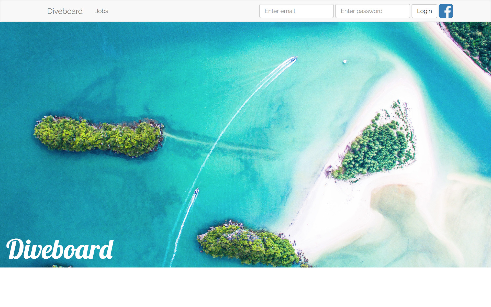
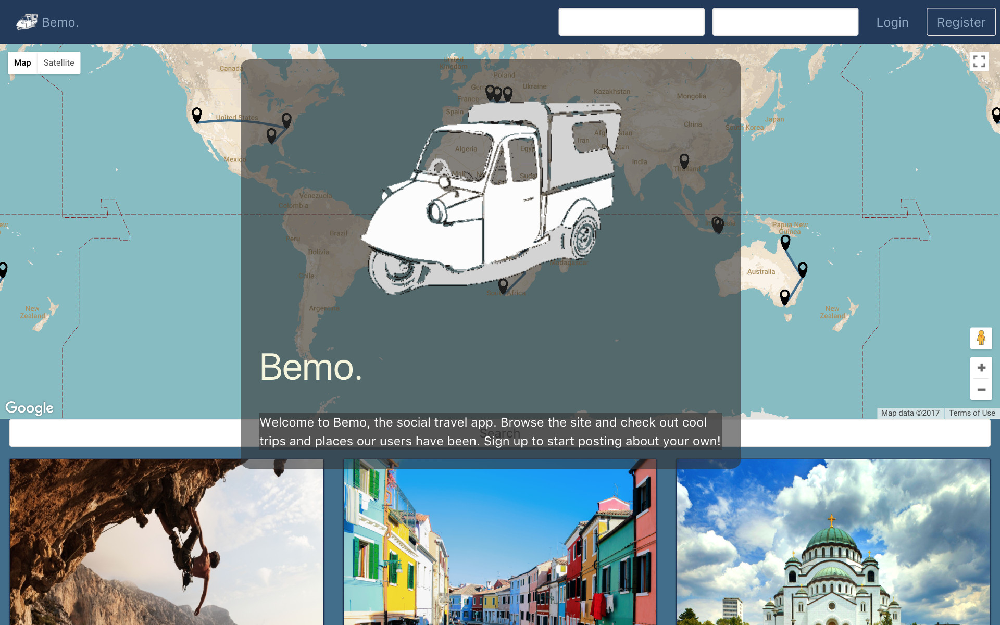
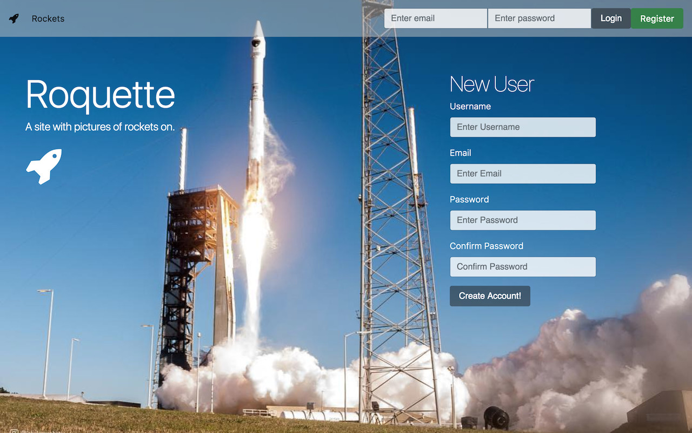
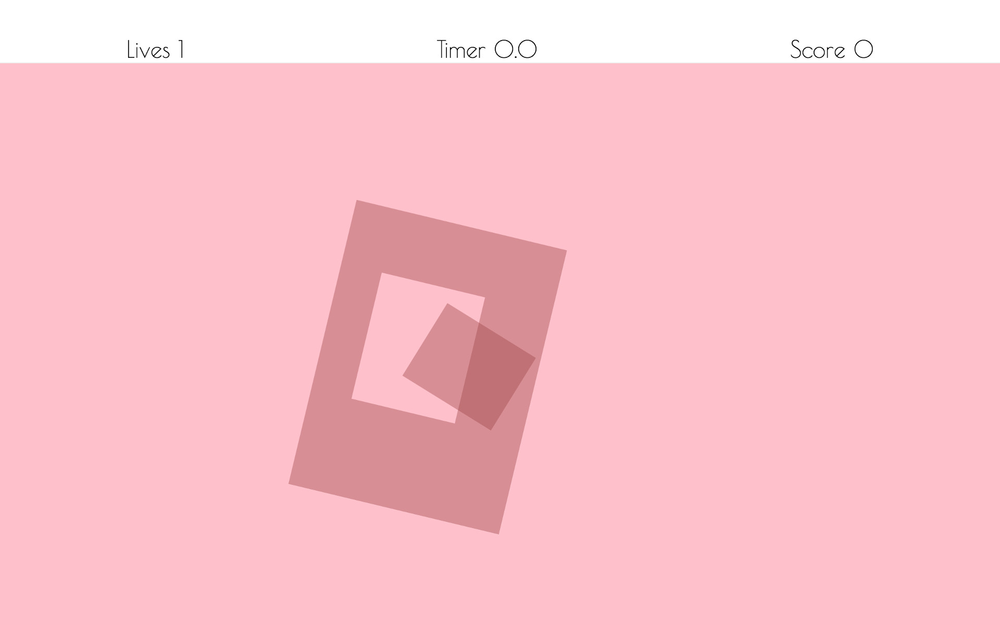

About
Welcome to my portfolio site, I'm Josh, a former Scuba Instructor turned web developer. I first got into coding thanks to my love of gaming, wanting to make my own games I began teaching myself the basics of code and soon I became captivated with code itself rather than just the products I'd set out to make.
In August this year having left full time work in the dive industry I decided to take the plunge and make development my career. I enrolled in the Web Development Immersive program at General Assembly and spent 3 months learning everything I could about full stack JavaScript Development, something I had an amazing time doing.
I am now seeking my first junior developer role, somewhere I can continue to grow my skills as a developer and contribute to the work of a great team. I want to tackle interesting problems, find creative solutions, and write ever cleaner, better and more extensible code. Thanks for taking the time to visit my site, please check out my work below.
My Work
General Assembly's Web Development Immersive is a twelve week career change program desgined to accelerate students' learning of development and provide the skills necessary to enter the industry in three months.
This portfolio focuses on the projects that were produced as part of the course, including three full-stack JavaScript apps (built with various stacks) and one front-end browser game.
In addition to the work here I have several of my own projects, including games built with C# and Unity and most recently a voice app for Amazon Alexa. If you're interested in knowing more about these projects please get in touch!




Diveboard
I created Diveboard as a better alternative to the job sites currently used in the dive industry. A MERN stack app, Diveboard integrates GoogleMaps, Places and Rest Countries APIs, bcrypt and JWT for user authentication, Axios and bluebird for http requests and bootstrap styling.
Bemo
Project 3 was a MEAN stack team project. Our team of two made a social travel app. Primarily I was responsible for integrating external APIs and organising team work ow through Trello. Features I independently contributed include a GoogleMap directive with contextual paths and markers, and geocoding services that enabled users to upload locations via GooglePlaces or a pin drop.
Roquette
Project two was a mini-project to build a RESTful app. Roquette was an Instagram-esque site with pictures of rockets. The build featured three models, including one to facilitate direct messaging and bcrypt for secure user authentication.
Shapes
The brief for project one was to create a browser game using front end technologies. I created a hole-in- the-wall style game primarily utilising jQuery for gameplay and animation, and vanilla JS for the logic. I found working on the JS game logic especially interesting.